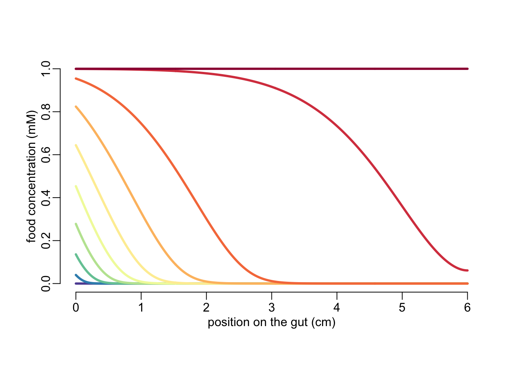

library(purrr)
library(dplyr)Labavic et al model
Loading some packages:
Figure 1S
The variables of the model:
| variable | unit | description |
|---|---|---|
| \(F\) | mM | food concentration |
The parameters of the model:
| parameter | unit | description | R variable |
|---|---|---|---|
| \(L\) | cm | length of the gut | L |
| \(x\) | cm | location along the gut from its entrance | x |
| \(F_\mbox{in}\) | mM | food inflow at the entrance of the gut | Fin |
| \(k\) | mM | Monod constant | k |
| \(r\) | /h | maximum growth rate | r |
| \(v\) | cm/h | flow velocity | v |
| \(D\) | cm\(^2\)/h | diffusion coefficient | D |
Changes of variables:
\[ s = \frac{v}{D}x \] and
\[ \phi(s) = \frac{F(s)}{F_\mbox{in}} \] which leads to this ODE:
\[ 0 = \frac{\partial^2 \phi}{\partial s^2} - \frac{\partial \phi}{\partial s} - \lambda\frac{\phi(1 - \phi)}{\kappa + \phi} \] where
\[ \kappa = \frac{k}{F_\mbox{in}} \]
and
\[ \lambda = \frac{rD}{v} \]
And the boundary conditions become:
\[ \frac{\partial\phi}{\partial s}(s = 0) = \phi(s = 0) - 1 \]
and
\[ \frac{\partial\phi}{\partial s}(s = \sigma) = 0 \]
where
\[ \sigma = \frac{v}{D}L \]
The function that calculates the \(\phi\) values:
phi_values <- function(v, Fin, k, r, D, L, phi0, N = 500) {
# phi0: guess on the value of phi
# N : number of integration points on the x axis
# changes of variables:
kappa <- k / Fin
lambda <- r * D / v^2
sigma <- L * v / D
# ODEs:
func <- function(s, Y, pars){
with (as.list(Y), {
dphi <- f
df <- f + (lambda * phi * (1 - phi)) / (kappa + phi)
return(list(c(dphi, df)))
})
}
# boundary conditions:
bound <- function(j, Y, pars) {
with (as.list(Y), {
if (j == 1) return (phi - f - 1)
if (j == 2) return (f)
})
}
# guess values:
sguess <- c(0, sigma)
yguess <- matrix(c(phi0, phi0 - 1, phi0, phi0 - 1), 2,
dimnames = list(c("phi", "f")))
# numerical solutions:
out <- bvpSolve::bvpcol(x = seq(0, sigma, le = N), func = func, bound = bound,
xguess = sguess, yguess = yguess, leftbc = 1)[, 1:2]
# rearranging and returning the output:
out[, 1] <- out[, 1] * D / v
tibble::as_tibble(out)
}A tweaked version of phi_values() in which \(F_\mbox{in} = 1 / v\):
phi_values2 <- function(v, k, r, D, L, phi0, N)
phi_values(v, 1 / v, k, r, D, L, phi0, N)A color generator:
color_generator <- colorRampPalette(rev(RColorBrewer::brewer.pal(11, "Spectral")))Let’s try it:
v_val <- seq(.001, .6, le = 10)
out <- map(v_val, phi_values2, k = .1, r = .42, D = .2, L = 6, phi0 = 0, N = 500)
plot(1, 1, xlim = c(0, 6), ylim = 0:1, type = "l",
xlab = "position on the gut (cm)", ylab = "food concentration (mM)")
walk2(out, color_generator(length(v_val)),
function(y, z) with(y, lines(x, phi, col = z, lwd = 3)))